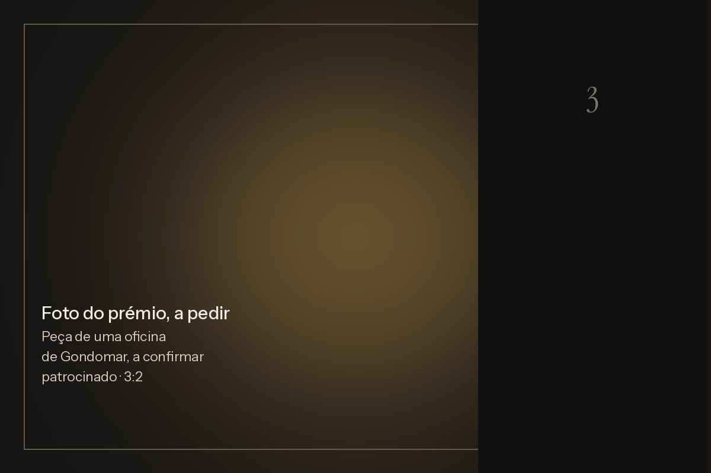

Maré
O cofre · 2 de 3

Pergunta 2 · Arrábida. Certo.
2 de 3 portas abertas
À terceira, o cofre abre-se hoje
Pergunta 3 de 3 · a última porta
Em que lugar ficou Portugal no Índice Global da Paz de 2026, entre 163 países e territórios?
3.º
7.º
12.º
21.º